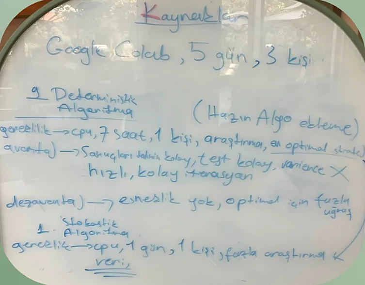
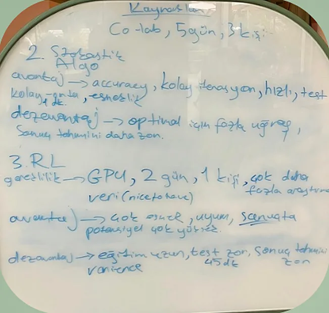
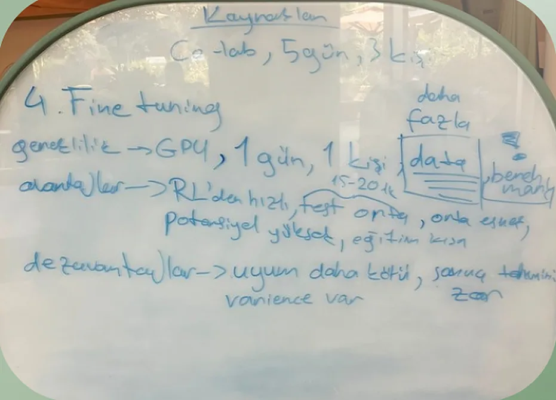

Exposure AI Academy · Final sunumu · Ağustos 2026
Monopoly oynayan bir yapay zekâ ajanı.
İlk soru
Desteden ilk kartı çekelim.
Monopoly oynayan bir yapay zekâ ajanı geliştir.
Başlangıç sermayesi
Her strateji bu üç kaynağa sığmak zorundaydı.
Strateji belirleme



Her tahtanın ilk satırı aynı: Kaynaklar · Colab, 5 gün, 3 kişi
Dört yaklaşım · tahtadan
+Tahmini ve testi kolay, hızlı
−Esneklik yok, optimal için uğraş
+Esnek, hızlı iterasyon, test 1 dk
−Sonucu tahmin etmek daha zor
+Çok esnek, potansiyel çok yüksek
−Eğitim uzun, test 45 dk, varyans
+RL'den hızlı, eğitim kısa
−Uyum daha kötü, varyans var
Rota
Yeniden deterministik, bu kez doğru hedefle: SLAYER
Training · Colab
Eğitim adımı
Kazanma oranı · %0–100
200 oyun · her kare bir oyun
Hedef fonksiyonunu keşfetme
Hedef fonksiyonu
max Net değer
net değer = nakit + varlıklar − borçlar
Deterministik ajan
Eğitim yok. Kuralları biz yazdık.
Tek hedef: net değeri büyütmek.
Exposure AI Academy · 2026
SLAYER'ın eli
Tek hedef: toplam net değer.
Tahmin etme, formülle hesapla.
Her hamlenin ek getirisi.
Seçilmeyen yolun bedeli.
Aynı durum, her zaman aynı karar.
Net değer optimizasyonu
Temsilî çizim · ölçek yok · gerçek oyun verisi değil
Aynı tahta · farklı ajanlar · tek kazanan
Sonuç
The truth
Doğru hedef, uzun eğitimden güçlü çıktı.
Başlangıç noktasına döndük
Ali · Emir · AdaExposure AI Academy · Ağustos 2026